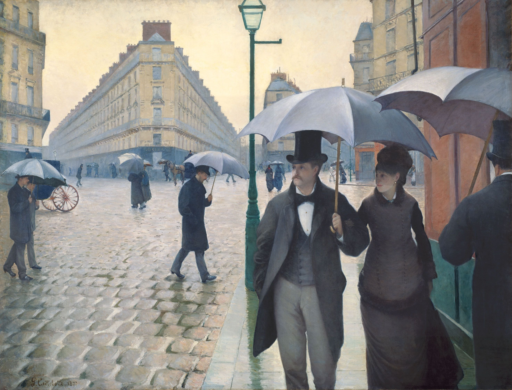

A gentleman in a black top hat, a woman in a dark plum dress on his arm, walking straight toward you across cobblestones still slick from rain — and behind them, an entire quarter of Paris glistening in the wet. At just over two meters tall and nearly three meters wide, this was the painting that looked least like "Impressionism" at the movement's own third exhibition in 1877. While everyone else was chasing broken, sun-flecked brushwork, Caillebotte painted the newly rebuilt Paris of Baron Haussmann with a precision closer to photography — freezing it into what reads like a movie still, a full half-century before movies existed.
A near-dead-center vertical split: a dark green cast-iron lamppost runs almost exactly down the middle of a canvas nearly three meters wide — a composition rule academic painting explicitly forbade (never place your visual weight at dead center). Caillebotte does it anyway, using a single thin post to generate a deliberate, faintly vertiginous symmetry.
Wide-angle-style distortion: the joints between the cobblestones converge toward the vanishing point at an exaggerated angle, opening up a field of view wider than the eye actually sees — closer to a wide lens than to natural sight. Infrared examination of the canvas has in fact revealed a precise underlying perspective grid Caillebotte squared up before painting — a level of premeditation almost none of his Impressionist peers, who prized outdoor spontaneity over preparatory drawing, would have tolerated.
A figure the frame cuts off: the umbrella-holding man at the right edge is sliced at the elbow by the canvas boundary — a "the shutter clicked before the frame was ready" quality Caillebotte borrowed deliberately from photography, so a meticulously engineered oil painting reads instead like a candid street snapshot.
The whole canvas is essentially a symphony written in grey: a creamy, overcast sky, the warm limestone grey of Haussmann-era facades, the silvery sheen rain leaves on cobblestone, and the ink-black and charcoal coats crowding the foreground. Saturation stays low across the board, but value does an enormous amount of work — "grey" here actually splits into seven or eight distinct warm and cool shades.
Caillebotte never lets the picture go fully monochrome: a small patch of terracotta-red building facade on the right, and the lamppost's own deep bottle-green, are the only two saturated notes in the entire composition — together they cover well under a tenth of the canvas, yet against so much muted grey they're the first thing the eye finds. It's the classic formula: a large field of low-saturation cool grey against a small area of high-saturation warmth — understated, but never dull.
The strange wedge-shaped corner in this painting is the Quartier de l'Europe, newly finished as part of Baron Haussmann's rebuilding of Paris — an overhaul that straightened and widened medieval streets and, in doing so, cut a wave of acute-angled intersections that forced architects to build prow-like, knife-edge corner buildings. This urban geometry was brand new at the time, and Caillebotte was among the first painters to take it seriously as a subject.
His brushwork sets him apart from Monet and Renoir, who exhibited alongside him: Caillebotte trained under the academic painter Léon Bonnat, and his rigorous, tightly controlled realism left the surface almost free of visible stroke — for decades this got him dismissed as "not Impressionist enough," until late-20th-century scholarship reassessed his cool, controlled realism as an equally valid path through Impressionism's real subject: modern urban life.
The painting debuted at the third Impressionist exhibition in 1877, held in a rented space on rue Le Peletier in Paris — its scale and its radical composition made it one of the most talked-about works in the show.
What lingers about this painting isn't the rain — it's the isolation running through a street full of people. At least a dozen pedestrians appear, each sheltering under their own umbrella, each walking their own line, and not one pair of eyes meets another's. Even the couple in the foreground, arm in arm, look in different directions — proof that even the two people standing closest to each other are each sealed inside their own small dome of sky.
That particular sensation — surrounded by people, and entirely alone among them — is exactly what Baudelaire's poetry on the Parisian flâneur kept circling back to, and Caillebotte fixed it, whole, onto a single canvas you can return to and stare at indefinitely. A hundred and forty-seven years later, a rush-hour subway platform or a rainy street crossing still runs on the same emotional current — which is exactly why this painting still lands, instantly, today.
Gustave Caillebotte (1848–1894) was born into a wealthy Parisian family that had made its fortune in textiles and military supply. He studied law and engineering before turning to painting under the academic master Léon Bonnat. Close with Monet, Renoir, and Degas, he was more than a fellow exhibitor — he personally financed the venues and logistics behind several of the Impressionist exhibitions. He was also one of the movement's most important early collectors: on his death in 1894 he bequeathed his personal collection of Monet, Renoir, Degas, Manet, and Pissarro paintings to the French state (an offer the art establishment initially resisted), and that bequest now forms the core of the Impressionist holdings at the Musée d'Orsay. Beyond painting, he was an avid yacht designer and gardener, and died suddenly of a stroke at 45 while working in his own garden in 1894.